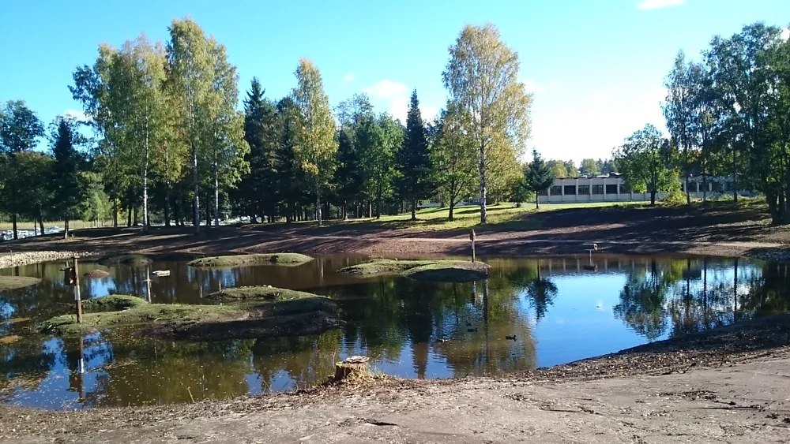
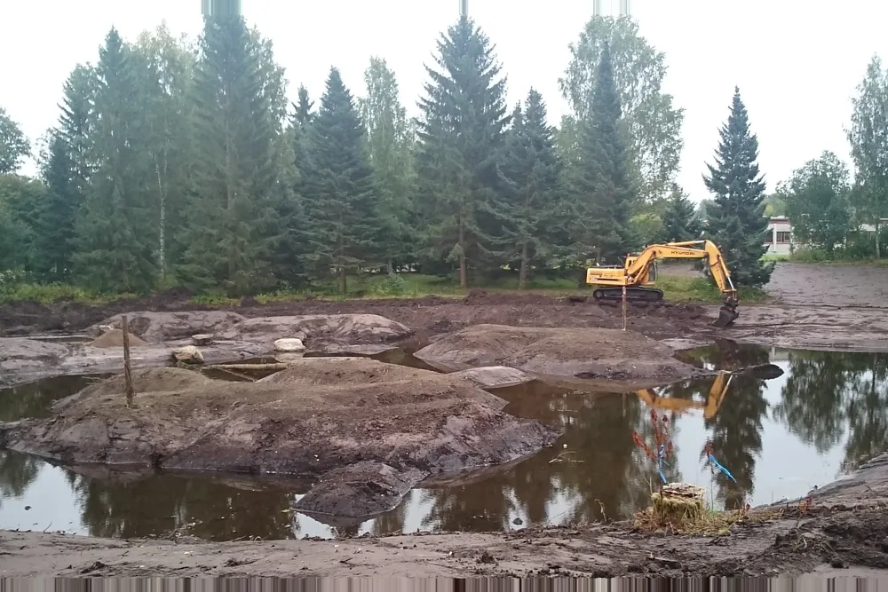

Vuosittain
Kuolimon vesiensuojeluilta
Valuma-alueen tilanne, mittaustulokset ja asiantuntijapuheenvuorot. Esitykset julkaistaan aineistoissa tilaisuuden jälkeen.
Toiminta
Toiminta rakentuu vapaaehtoistyön päälle. Mittaamme itse, kunnostamme yhdessä maanomistajien kanssa ja viemme tulokset sinne, missä valuma-alueesta päätetään.
Seuranta
Näkösyvyys eli näkösyvyyslevyllä mitattava veden kirkkaus on yksinkertaisin tapa seurata vesistön tummumista. Mittaus onnistuu veneestä muutamassa minuutissa, eikä se vaadi laboratoriota.
Vapaaehtoiset mittaavat Kuolimolla ja koko valuma-alueella 3–4 kertaa vuodessa. Samoja pisteitä mitataan vuodesta toiseen, jotta aikasarja on vertailukelpoinen. Tulokset julkaistaan avoimesti.
Mittaustyö on yhteistä Savitaipaleen, Mikkelin ja Mäntyharjun sekä Etelä-Savon ja Kaakkois-Suomen ELY-keskusten kanssa.
Haluatko mittaajaksi? Ota yhteyttä leo.lauramaa@gmail.com tai 0400 727 625.
Tavoitteet
Seuranta
Pro Kuolimo aloitti sinileväseurannan Kuolimolla ja valuma-alueella vuonna 2024. Havainnot kirjataan yhtenäisellä lomakkeella, jolloin niitä voi verrata paikkojen ja vuosien välillä.
Seurantaan voi osallistua kuka tahansa rannan asukas tai kesäasukas. Ohje kertoo, miten havainto tehdään ja kirjataan niin, että siitä on hyötyä.
Havainnot
Vapaaehtoisten keräämät minkkihavainnot koottiin kartalle vuonna 2025 ja toimitettiin eteenpäin pyyntityön tueksi. Havaintotieto auttaa kohdistamaan vieraspetojen pyynnin sinne, missä se hyödyttää vesilinnustoa eniten.
Kunnostus
Kosteikko hidastaa valumaveden matkaa ja antaa kiintoaineen laskeutua ennen järveä. Hyvin sijoitettu kosteikko pidättää sekä maa-ainesta että ravinteita ja tarjoaa samalla elinympäristön linnuille ja hyönteisille.
Kuolimon ensimmäinen kosteikko valmistui Kapkk’ojaan Savitaipaleen kirkonkylän ranta-alueelle vuonna 2015. Se täytti kymmenen vuotta 2025, ja valuma-alueella on nykyään useita kosteikkoja.
Hulevesi tulvii kaduille, kastelee perustuksia ja vie roskia mennessään vesistöihin. Kosteikko kääntää saman veden hyödyksi: se on samalla vesiensuojelurakenne ja taajaman maisemakohde.
Onko sinulla sopiva paikka? Kosteikon rakentaminen alkaa maanomistajan luvasta ja kohteen katselmuksesta. Ota yhteyttä hallitukseen.



Talkoot
Talkoissa raivataan, niitetään ja huolletaan kohteita, jotka palvelevat virkistyskäyttöä ja vesiensuojelua. Kesällä 2025 talkoot pidettiin Lehtisensaaren Ristniemessä, joka on yleishyödyllisen Antti Matikka -säätiön omistuksessa.
Talkoisiin ei tarvita erityisosaamista eikä välineitä. Ne ovat myös helpoin tapa tutustua muihin, jotka tekevät samaa työtä.
Tilaisuudet
Järjestämme vuosittain tilaisuuksia, joissa käydään läpi mittaustulokset, hankkeiden tilanne ja nieriäkannan seuranta. Tilaisuudet ovat avoimia kaikille ja niihin voi useimmiten osallistua myös verkossa.
Vuosittain
Valuma-alueen tilanne, mittaustulokset ja asiantuntijapuheenvuorot. Esitykset julkaistaan aineistoissa tilaisuuden jälkeen.
Hankekohtaisesti
Yhden valuma-alueen tai järven asukkaille ja maanomistajille suunnattu ilta, jossa käydään kohteet läpi kartalla.
Kesäkaudella
Vesiensuojeluvinkkejä metsänhoitoon, kosteikkokohteiden katselmukset ja purojen tilan tarkastelu maastossa.
Hankkeet
Osallistu
Ota yksi mittauspiste vastuullesi. Ohjeet ja levy tulevat yhdistykseltä.
Ei tarvita osaamista eikä välineitä – vain päivä aikaa.
15 € vuodessa, alle 21-vuotiaille maksutta. Liity tästä →